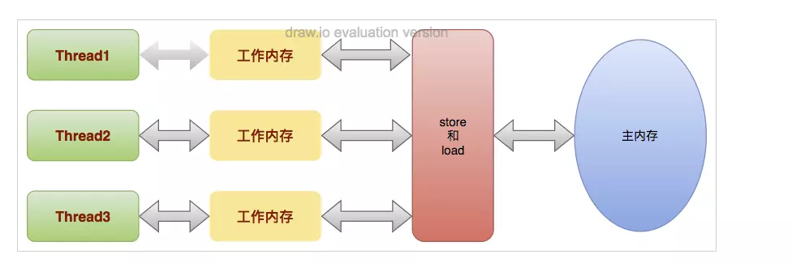

volatile是一个轻量级的线程同步机制。它的特性之一，是保证了变量在线程之间的可见性，并不保证更新的原子性。
volatile主要对所修饰的变量提供两个功能：
* 可见性
* 防止指令重排序
1、可见性
Java内存模型(JMM)上： * 每一个线程都有属于自己的工作内存 * 所有线程共用一个主存 * 每一个线程会将共享数据从主内存拷贝至自己的工作内存 
为什么会出现共享变量可见性的问题？
这是因为线程对共享变量的所有操作都必须在自己的工作内存中进行，不能从主内存中读写；而且不同线程之间无法直接访问其它线程工作内存中的变量，线程间变量值的传递需要通过主内存来完成。 完成可见性，必须要经过如下两个步骤： 1. 把工作内存1中更新过的共享变量刷新到主内存中； 2. 把内存中最新的共享变量的值更新到工作内存2中；
Java语言层面支持的可见性实现方式有两种： 1. synchronized 2. volatile
synchronized不仅能通过互斥锁来实现同步，而且还能够实现可见性。Java内存模型关于synchronized有两条规定： * 线程释放锁之前，JMM会将工作内存中的共享变量刷新到主内存中； * 线程加锁时，将清空工作内存中共享变量的值，从而使用共享变量时需要从主内存中重新读取最新的值；
线程执行互斥代码的过程： 1. 获取监视器锁 2. 清空工作内存 3. 从主内存中拷贝变量的最新副本到工作内存 4. 执行代码 5. 将更改后的共享变量的值刷新到主内存 6. 释放监视器锁
其中volatile是比synchronized更轻量的方案。 被volatile修饰的变量在修改后，会立即写会主内存，同时被其他线程感知到，并重新从主内存拷贝，获得最新修改值，从而避免数据脏读。
具体来说：
* 对volatile变量执行写操作时，会在写操作后加入一条store屏障指令，这样就会把读写时的数据缓存加载到主内存中
* 对volatile变量执行读操作时，会在读操作前加入一条load屏障指令，这样就会从主内存中加载变量
所以说，volatile变量每次被线程修改时，会被强迫写回主内存，而每次被线程访问时，都强迫从主内存中重读该变量的值，从而保证不同的线程总能看到该变量的最新值。
线程写volatile变量的过程：
1. 改变线程工作内存中volatile变量副本的值；
2. 将改变后的副本的值从工作内存刷新到主内存中；
线程读volatile变量的过程： 1. 从主内存中读取volatile变量的最新值到线程的工作内存中； 2. 从工作内存中读取volatile变量的副本
Java内存模型也规定了工作内存与主内存之间交互的协议，定义了8种原子操作:
(1) lock:将主内存中的变量锁定，为一个线程所独占
(2) unclock:将lock加的锁定解除，此时其它的线程可以有机会访问此变量
(3) read:将主内存中的变量值读到工作内存当中
(4) load:将read读取的值保存到工作内存中的变量副本中
(5) use:将值传递给线程的代码执行引擎
(6) assign:将执行引擎处理返回的值重新赋值给变量副本
(7) store:将变量副本的值存储到主内存中
(8) write:将store存储的值写入到主内存的共享变量当中
2、指令重排
指令重排序是JVM为了优化指令，提高程序运行效率，在不影响单线程执行结果的前提下，尽可能地提高并行度，可能会对一些操作指令进行了重新排序。在多线程下，指令重排将会给我们的程序带来不确定的结果。
编译器将不会对存在数据依赖性的程序指令进行重排，这里的依赖性仅仅指单线程情况下的数据依赖性。
在线程A中:
context = loadContext();
contextReady = true;
在线程B中:
while(!contextReady){
sleep(100);
}
在单线程模式下, loadContext和contextReady并没有依赖性，所以可能发生指令重排序，类似下面这样：
contextReady = true;
context = loadContext();
可以看到，在多线程模式下，指令重排可能影响其他线程的逻辑，产生不确定执行结果。
被volatile修饰的变量，JVM会为我们做两件事：
1、在每个volatile写操作前插入StoreStore屏障，在写操作后插入StoreLoad屏障。
2、在每个volatile读操作前插入LoadLoad屏障，在读操作后插入LoadStore屏障。
JVM编译器遵循内存屏障的约束，运行时依靠CPU屏障指令来防止指令重排。
写线程：
volatile boolean contextReady = false;
context = loadContext();
contextReady = true;
##store屏障指令##
读线程：
while(##load屏障指令## !contextReady){
sleep(100);
}
综上来看，volatile核心原理是内存屏障指令, 屏障指令既解决可见性问题，又防止JVM指令重排。